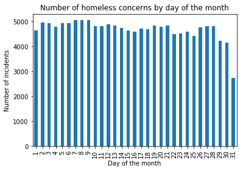

Explainer page
Click here to go to project.1. Motivation
What is your dataset?
The main dataset is obtained from Data San Francisco and includes all 311 cases in San Francisco from 2008 until today. The 311 cases we are interested in are homeless concerns. That is when people report they are concerned about homeless people. While there were a lot of interesting types of 311 cases we decided to look into the homeless as it was amongst the most common types of 311 cases. We also wanted to try and find out why there are so many homeless people in San Francisco even though business in Silicon valley is booming. The attributes we are interested in are when the case is reported and the location of the homeless concern, which is provided as longitude and latitude in the dataset. We want to see if there is a relationship between the average income of a section and the number of homeless concerns in that section. To be able to do that we found data on average income of different sections in San Francisco on Data USA. We also want to show the user the geographical representation of San Francisco, for that we need GeoJSON. We found that on GitHub and tailored it to our need.
Why did you choose this/these particular dataset(s)?
We chose this dataset as it contains a lot of useful information, we wanted to work with data from San Fracisco as it is a beautiful city. As we wanted to do geographical visualizations we knew we would at least need longitude and lattitude. We also wanted to do some sort of animation and for that you would need some representation of time. The chosen data set contains both these attributes, that is the location and time of the 311 cases. The other two datasets that were chosen to had additional information on San Francisco that we knew we needed.
What was your goal for the end user’s experience?
The goal is to create an interactive visual narrative that is simple and elegant whilst containing all the information the user needs to read the story we want to tell. The story we want to tell is how and, more importantly, why the homeless concerns in San Francisco have grown so much these past 10 years.
2. Basic stats. Let’s understand the dataset better
Write about your choices in data cleaning and preprocessing
As we were only interested in the 311 cases on homelessness concerns we removed the irrelevant data. Originally the dataset was 964.6 MB and contained 2.87 million rows and 19 columns. After having extracted information we needed the size of the dataset was 147 MB and contained 145.000 rows and 5 columns. The attributes we are interested in are mainly the time and location of the reported concern for the homeless. We used pandas dataframe in python to work with the data, choosing attributes we were interested in and then return the relevant data to a .csv file we could then use in our D3 visualizations. The reason for using pandas is that we had previous experience in using it and it handles relatively large data well. We found a GeoJSON representation of the whole state of California on GitHub, we however only needed San Francisco so we used a Sublime Text along with a bit of regular expressions to clear out the irrelevant geographical areas from the JSON and then we used http://geojson.io/ for a bit of finishing touches.
Write a short section that discusses the dataset stats, containing key points/plots from your exploratory data analysis.
For the exploratory data analysis we used python. The main module used was pandas as it offers a great way to interact with data as well as do exploratory data analysis. We started with the whole dataset which was around 2.87 million rows and 19 columns. As we knew from the beginning that we wanted to do a geographical representation of the city and the incidents we started with removing all the reports that didn't contain a location in the dataset. After doing that the number of rows was down to roughly 1.6 million. Next we looked at the 5 most common types of 311 reports, they were: Street and Sidewalk Cleaning, Graffiti, Abandoned Vehicle, Homeless Concerns and Encampments. We decided to look into the homeless and therefor extracted that data from the dataset giving us around 145 thousand rows. As we also wanted to some sort of animation we needed time. We checked if all time values were there, transformed them to the correct format and extracted it along with the location of all incidents. Now we had all the data needed from the main dataset. Above are some plots from the exploratory data analysis. As stated above we also needed to extract relevant parts of the GeoJSON representation of California. That ended up being 8057 features. We also used the average income of the different districts and used the GeoIDs from that to extract the districts from the California GeoJSON representation.
3. Genre. Which genre of data story did you use?
The genre is a mix of animation and annotated charts because we want to show the user how the times have changed, an easy way to show that visually is with an animation. We also want the user to be able to interact with our visualisation and allow him to choose what to look at.
Which tools did you use from each of the 3 categories of Visual Narrative (Figure 7 in Segal and Heer). Why?
- Visual Structuring: we used an interactive Timebar in the form of a histogram. The user can use this timebar to look at data from different periods as well as control the size of the period.
- Highlighting: we used Motion in our animation of the location of the homeless concerns throughout the time period. An animation allows the user to see clearly if time and/or location is a important factor in homeless concerns.
- Transition Guidance: we use Animated Transitions in our animation. The same reason as explained above in Motion applies to why we use animation.
Which tools did you use from each of the 3 categories of Narrative Structure (Figure 7 in Segal and Heer). Why?
- Ordering: we use the User Directed Path approach as we want to take the user on a journey. We set the page up in the way that the user knows what is coming next and why and we explain afterwards the conclusion. We however allow the user to interact with some of the visualizations and therefore there is some degree of freedom.
- Interactivity: we use a couple of tools from this group as we want to allow the user to interact with our visualizations. We use Hover Highlighting and Filtering / Selection, the reason for using these tools is to make sure that the user can better understand our story through interactivity.
- Messaging: from this group we also employ more than one tool. We use Headlines / Captions, Annotations, Introductory Text and Summary. We use these tools to direct our user through the story we are trying to tell with our visualizations. Through these tools we can help the user better understand what it is he is seeing as well as control the flow of the narrative.
4. Visualizations
Explain the visualizations you’ve chosen.
We have chosen to create a brushable (animation available also) histogram for all incidents which is connected to a geographical representation of San Francisco. The city is divided into it's districts and the districts are color coded according to the average income of it inhabitants. The incidents are plotted onto the geographical representation of the city. We also have a stacked area chart where the user can choose a district from our geographical representation of the city and see how the reports distribute through the years 2013-2015. Our narrative also includes a histogram and a line graph.
Why are they right for the story you want to tell?
These are great visualizations for our story as we want to show the user how the location of the homeless has changed over time and spread around the city. The user also gets a feeling of the number of incidents in the histogram and how they have increased in recent years. The plot is interactive and in that way the user can choose focus on certain time frames or districts and look at them in detail. The supplementary histogram and line graph helps the user go through and understand our narrative.
5. Discussion. Think critically about your creation
What went well?
The gathering of data was really easy as the sites we used make the data so easily accesible. The preprocessing didn't take long as we have experience in data cleaning and preprocessing. Creating the correct GeoJSON took a couple of tries before we got it to work as we wanted. Creating a narrative around the data was difficult but with the help of the supplied article from Segel and Heer we succeeded. The main visualization took most of the time as it is quite complex and heavily inter connected.
What is still missing? What could be improved? Why?
The next steps would be to add further visualizations and perhaps make the website a bit more visually pleasing. It would also be quite interesting to look into how San Francisco's new constructions affect the homeless as they might be needed to be cleared away from areas that were before empty but now contains a construction site. It would also be interesting to look into tourism and try and see if tourist report a lot homeless concerns. We had a rather big problem with loading the data in an efficient way. The problem is of course the size of the data and it seems that it takes a bit of time to be loaded. This also affects our animation as we are animating the location of all the reports, as well as the time in the histogram and also updating the color coding of the districts each year. A solution would be to make the data less dense in a way that the loss of information is minimized.
6. Contributions. Who did what?
- Line chart: Main responsible was Sigurbjörn Jónsson
- Histogram: Main responsible was Sigurbjörn Jónsson
- Main plot (geo-chart, stacked area chart and histogram: Main responsible was Sigurbjörn Jónsson
- Text and narrative for Main page: Main responsible was Hringur Daðason
- Preprocessing of data in Python: Main responsible was Hringur Daðason
- Explainer page: Main responsible was Hringur Daðason
Both groupmembers worked together on all parts of the project and were present for all project work.